介绍
你是否被某度网盘限速所困扰
你是否还在苦苦百度慕课答案
你是否为了某音乐平台的vip限制而不能下载歌曲
你是否因为找不到各种电影资源而悲伤
那么
你是否愿意用五分钟来改变这些困扰
tampermonkey
沙雕版教程---看不懂你咬我
①浏览器要求
浏览器要求-火狐浏览器(Firefox)-或者-谷歌浏览器(Chrome).(注意：360浏览器，IE浏览器可能无法正常使用该神器,至于微软自带浏览器-Microsoft Edge-我不知道能不能用)
浏览器下载链接我已经贴出来了，请选择其中一个即可(推荐火狐浏览器，感觉更加NICE)
②安装tampermonkey插件
先介绍火狐浏览器
先找到火狐浏览器右上角这三横的标志并点击
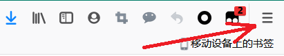
点开后再找到附加组件并点击
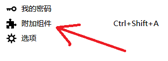
点开后在搜索框里面输入tampermonkey
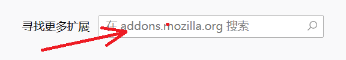
搜索结果中找到这个并点击
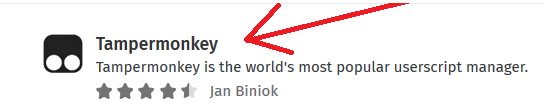
点击这个按钮即可进行安装
接下来是谷歌浏览器(安装了火狐就可以跳过这一块)
先找到谷歌浏览器右上角这三点的标志并点击
点开后再找到更多工具并点击
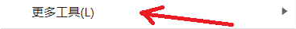
在侧边栏找到扩展程序并点击
点开后点击蓝色的扩展程序按钮
在左下角找到该样式并点击
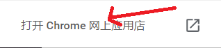
在搜索框里面输入tampermonkey
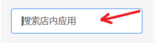
搜索结果中找到该样式插件
点击旁边的蓝色添加按钮即可进行安装
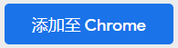
③添加你所需要的脚本
我给大家演示一下脚本添加过程.以火狐浏览器为例
在上文给的脚本网站里面选择你所需要的脚本
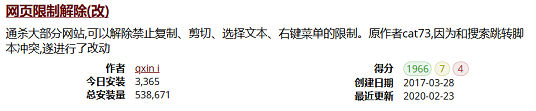
点开后点击安装此脚本
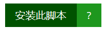
点开后点一下安装
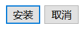
之后会被弹回上级页面，这时刷新页面，如果出现类似于这种提示，则表示安装成功
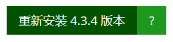
至于该怎么用，点开你要用的页面脚本自然就会加载出来，比如下列图片
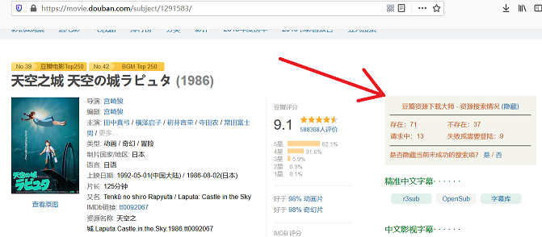
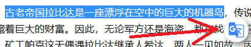
注意:如果脚本无法加载有可能是如下问题；①tampermonkey未开启；②脚本下载失败；③脚本被你禁用或者关闭；④你未允许脚本在该网页运行
如果你遇到这样的弹窗，请点击如图一项
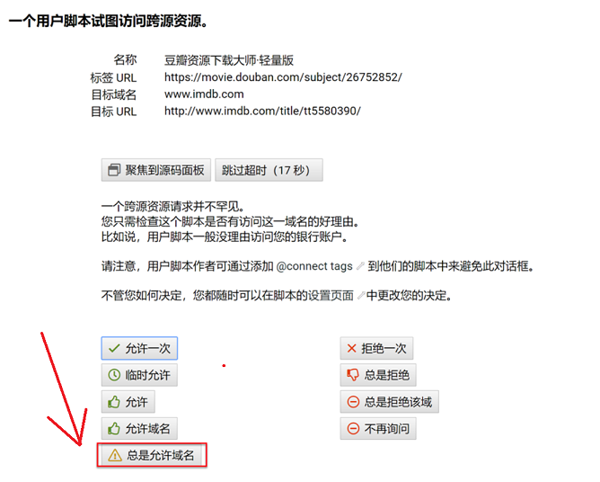
IT IS A LONG WAY TO LEARN